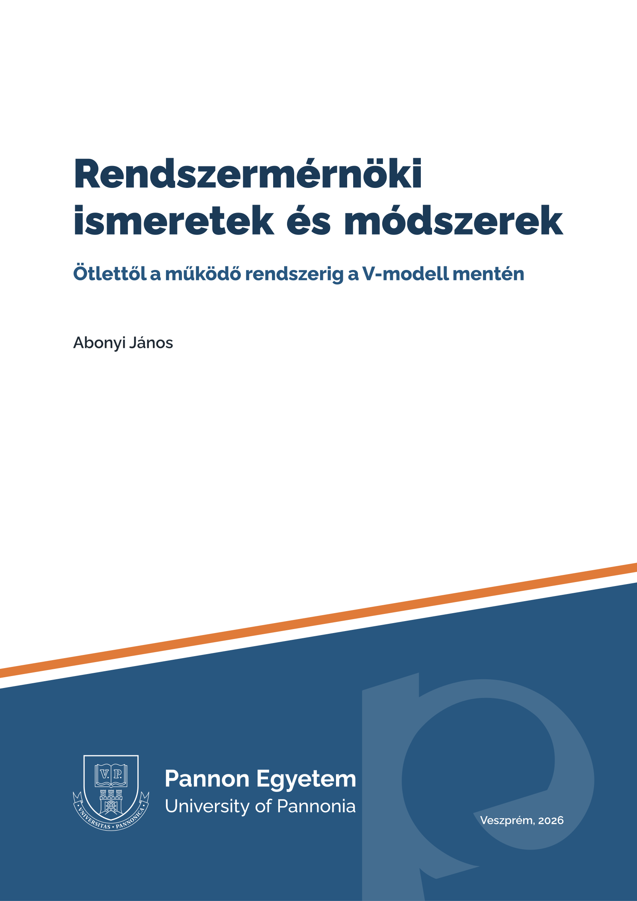

Előszó

Ez a könyv arról szól, hogyan lesz egy homályos igényből működő, biztonságos, használható és gazdaságos rendszer. A rendszer lehet mechatronikai berendezés, gyártócella, informatikai alkalmazás vagy egy szervezet működési folyamata. A rendszermérnökség az a gondolkodásmód és módszertan, amely ezt az utat végigköveti. Az érdekelt felek igényeinek feltárásától a követelményeken, a koncepciókon és a terveken át a megvalósításig, az ellenőrzésig, az üzemeltetésig, sőt a kivonásig tart.
Kinek szól a könyv?
Elsősorban mérnöki alapszakos hallgatóknak: műszaki menedzsereknek, mechatronikai mérnököknek és mindazoknak, akik informatikai fejlesztésben vesznek részt. A könyv önálló tanulásra készült. A fogalmakat lépésről lépésre vezeti be, minden módszert kidolgozott példán mutat be, és a fejezetek végén önellenőrző kérdések és projektfeladatok segítik a gyakorlást. A gyakorló mérnökök kézikönyvként is használhatják, egy-egy módszer gyors felidézésére.
A könyv felépítése: a V-modell mentén
A könyv a rendszerfejlesztés V-modelljét követi (2.4. ábra). Az I. rész az alapokat teszi le: a rendszerszemléletet, az életciklust és a V-modellt, valamint a modellek szerepét. A II. rész a V bal ágán halad lefelé, a problémától és az érdekelt felektől a követelményeken, a koncepciókon és a döntéseken át a részletes tervezésig. Ide tartoznak az emberközpontú tervezés, a kockázat-, a megbízhatósági és a biztonsági elemzések is. A III. rész a V csúcsán a megvalósítással és a gyártó- és szolgáltatófolyamatok tervezésével foglalkozik. A IV. rész a V jobb ágán halad felfelé az integrációtól a verifikáción és a validáción át az üzemeltetésig és a folyamatos fejlesztésig. Az V. rész a teljes V-n átívelő technikai menedzsmentet foglalja össze.
Minden fejezet egy kis V-térképpel kezdődik, amely megmutatja, a fejlesztés melyik lépésénél tartunk.
Mit fogsz tudni a könyv végére?
A könyv tanulási eredményei a Magyar Képesítési Keretrendszer (MKKR) négy dimenziójában fogalmazódnak meg: tudás, képességek, attitűd, valamint autonómia és felelősség (Magyarország Kormánya 2012). A szint az alapképzés végzettségi szintjének felel meg, amely az Európai Képesítési Keretrendszer 6. szintjével egyenértékű (Az Európai Unió Tanácsa 2017). A 1. táblázat a könyv egészére vonatkozó eredményeket foglalja össze; az egyes fejezetek elején ezek részletes, a fejezethez kötött változata áll.
| Dimenzió | A könyv feldolgozása után… |
|---|---|
| Tudás | ismered a rendszer, az életciklus és a V-modell fogalmát, a rendszermérnöki folyamatokat az ISO/IEC/IEEE 15288 szerint, valamint a követelmények, az architektúra, a döntéstámogatás, a kockázat-, megbízhatósági és biztonsági elemzés, a verifikáció és a validáció alapvető módszereit és azok korlátait. |
| Képességek | egy valós fejlesztési feladatban azonosítod az érdekelt feleket és a problémát, mérhető követelményeket és működési koncepciót írsz, koncepcióváltozatokat dolgozol ki és választasz közülük indokolt módszerrel, elvégzed a legfontosabb kockázati és megbízhatósági elemzéseket, és verifikációs és validációs tervet készítesz. A módszereket táblázatkezelőben és Pythonban is alkalmazni tudod. |
| Attitűd | a rendszert egészében és a teljes életciklusában szemléled; nyitott vagy más szakterületek és az érdekelt felek nézőpontjára; a döntéseidet adatokkal és forrásokkal támasztod alá; és kritikusan kezeled a modellek, a szoftveres eszközök és a nagy nyelvi modellek eredményeit. |
| Autonómia és felelősség | egy kisebb fejlesztési projekt rendszermérnöki feladatait önállóan, egy csapat tagjaként végzed; felelősséget vállalsz a munkatermékeid minőségéért és nyomonkövethetőségéért; és felismered, mikor kell egy döntést a hatáskörrel rendelkező érdekelt felekre bízni, különösen a biztonságot és az embert érintő kérdésekben. |
Hogyan tanulj a könyvből?
A könyv önálló tanulásra készült. Egy fejezet feldolgozásához a következő sorrendet javasoljuk:
- Olvasd el a fejezet elején a tanulási eredményeket és a V-térképet: ezekből látod, mit kell a fejezet végére tudnod, és hol tartunk a fejlesztésben.
- Haladj végig a szövegen, és a futó esetek dobozainál állj meg: ezek mutatják meg, hogyan működik a módszer egy konkrét rendszeren.
- Számold végig a kidolgozott példákat papíron vagy a Gyakorlati útmutató sablonjaiban; a számok újraszámolása többet tanít, mint az olvasásuk.
- Válaszolj az önellenőrző kérdésekre, mielőtt a megoldást megnéznéd. Ha egy kérdés nem megy, térj vissza a hozzá tartozó szakaszhoz.
- Végezd el a projektlépést a saját féléves projekteden. A projektlépések egymásra épülnek: a félév végére egy kisebb rendszer teljes rendszermérnöki dokumentációja áll össze.
Válogatott útvonalak
A fejezetek önállóan is olvashatók: mindegyik elején ott vannak a tanulási eredmények, és ahol egy korábbi fejezetre épül, ezt hivatkozás jelzi. Néhány javasolt útvonal, ha csak egy-egy témakörben haladnál:
| Útvonal | Ajánlott fejezetek |
|---|---|
| A rendszermérnökség alapjai | 1., 2., 4., 5., 6., 23., 24. |
| Minőségfejlesztés | 5., 7., 15., 16., 18., 25. |
| Döntéstámogatás | 5., 9., 10., 14. |
| Ember a rendszerben | 5., 11., 12., 13., 24. |
| Folyamatok és működés | 19., 20., 21., 25. |
| Informatikai fejlesztés | 2., 3., 4., 5., 6., 8., 11., 22., 23., 24. |
A futó esettanulmányok
A könyv ugyanazon a három, kitalált, de életszerű rendszeren mutatja be a módszereket:
- KoboCella: kollaboratív robotos összeszerelő cella egy beszállító üzemben;
- VárosiBringa: közösségi elektromos kerékpárrendszer egy dombos egyetemi városban;
- ForgácsTech: egy CNC-alkatrészgyártó üzem digitális átállása.
Az esetek részletes leírása az A. függelékben található.
Kiemelődobozok
A szövegben visszatérő dobozok segítik a tájékozódást:
- Tanulási eredmények: mit fogsz tudni a fejezet végére;
- Fogalom: pontos meghatározás;
- Futó eset: a módszer alkalmazása az esettanulmányokon (kék: KoboCella, zöld: VárosiBringa, lila: ForgácsTech);
- Kidolgozott példa: lépésről lépésre végigszámolt feladat;
- Gyakori buktató: tipikus hibák;
- Kitekintés: a terület kutatási frontja, újabb irányok;
- Összefoglalás: a fejezet lényege;
- Önellenőrzés: kérdések megoldással;
- Projektlépés: a féléves projekt soron következő feladata;
- Továbbolvasás: a legfontosabb források.
Források és a Gyakorlati útmutató
A könyv elméleti gerincét a rendszermérnökség nemzetközi szabványai adják: az életciklus-folyamatokat leíró ISO/IEC/IEEE 15288:2023 (ISO/IEC/IEEE 2023), az életciklus-kezelés ISO/IEC/IEEE 24748-1 szabványa (ISO/IEC/IEEE 2024) és a követelménymérnökség ISO/IEC/IEEE 29148 szabványa (ISO/IEC/IEEE 2018). A gyakorlati tudást az INCOSE rendszermérnöki kézikönyve (INCOSE 2023), a szabadon elérhető rendszermérnöki tudástár (SEBoK) (SEBoK Editorial Board 2025) és a klasszikus tankönyvek (Blanchard és Fabrycky 2011; Kossiakoff és mtsai. 2011) összegzik. Az egyes módszereket mindig az eredeti szakirodalmuk és a rájuk vonatkozó szabványok alapján mutatom be, a minőségügy, a döntéstámogatás, a biztonságtechnika és az emberközpontú tervezés újabb eredményeivel kiegészítve. A példák ipari, szolgáltatási és informatikai rendszerekből származnak. Kiegészítő olvasmányként két szabadon hozzáférhető, sokféle mintát és ellenőrzőlistát tartalmazó gyűjteményt is ajánlunk: a NASA rendszermérnöki kézikönyvét (NASA 2016) és a tervezőmérnököknek szóló NASA-eszköztárat (Goldberg és mtsai. 1994); a fejezetek továbbolvasási listái megadják, melyik részük kapcsolódik az adott témához.
A könyv párja a Rendszermérnöki eszköztár – Gyakorlati útmutató. Ez ugyanebben a sorrendben, egységes eszközlapokon mutatja be a módszereket, letölthető sablonokkal, mintapromptokkal és a féléves projekt teljes útmutatójával. A két kötet kölcsönösen hivatkozik egymásra.
A könyv anyaga a Pannon Egyetem Rendszermérnöki ismeretek tantárgyának több éves oktatási tapasztalatára épül.
Szabad felhasználás
A könyv szövege és ábrái a Creative Commons Nevezd meg! – Ne add el! – Így add tovább! 4.0 (CC BY-NC-SA 4.0) licenc alatt használhatók. A forrásállományok és a mellékelt programkódok MIT-licencűek. A könyv minden ábrája vektorgrafika, és a forráskódjuk megtalálható a tárhelyen. A Pannon Egyetem neve, címere és logója az egyetem arculati eleme; a licenc ezekre nem terjed ki.
A könyv kiadásait a Zenodo archiválja. Hivatkozáskor ezt az adatot használd:
Abonyi János (2026): Rendszermérnöki ismeretek és módszerek – Ötlettől a működő rendszerig a V-modell mentén (kézikönyv és gyakorlati útmutató). Pannon Egyetem, Veszprém. DOI: 10.5281/zenodo.24414135
Veszprém, 2026. november
Abonyi János